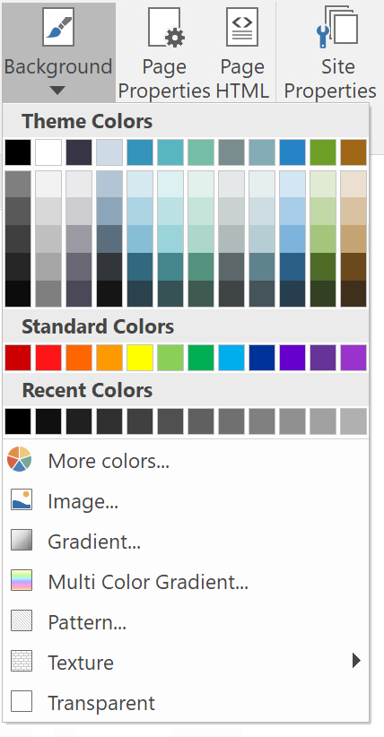
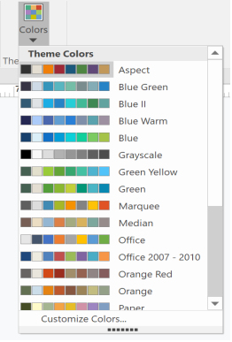
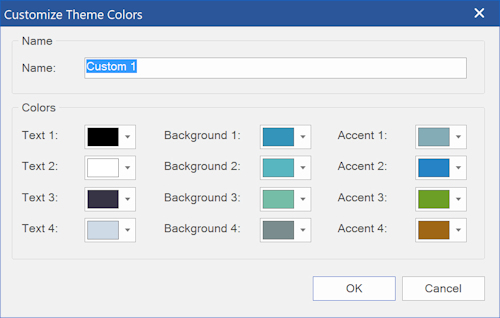
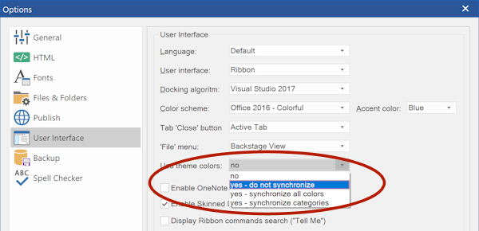

Themes Colors
By default, WYSIWYG Web Builder's color picker displays a standard color palette with 140 standard web colors.
With the 'Theme color' option (inspired by the MS Office color picker) you can configure a custom color palette of 12 colors.
The light and dark variants of these colors will be generated automatically, just like in MS Office.
By default, WYSIWYG Web Builder's color picker displays a standard color palette with 140 standard web colors.
With the 'Theme color' option (inspired by the MS Office color picker) you can configure a custom color palette of 12 colors.
The light and dark variants of these colors will be generated automatically, just like in MS Office.

Select a different color theme
You can set the color theme in Menu -> Page -> Theme Colors. The color theme applies the entire project.
You can set the color theme in Menu -> Page -> Theme Colors. The color theme applies the entire project.

Select 'Customize Colors' to modify the colors in the current theme. To create a new theme, enter a new name.
There are 3 categories: text, background and accent. The categories are used for synchronizing the colors when the theme changes (see above).
There are 3 categories: text, background and accent. The categories are used for synchronizing the colors when the theme changes (see above).

The following option are available:
• no
use the default color palette.
• yes - do not synchronize
use custom colors, but do not replace the colors in pages when the theme is modified.
• yes - synchronize all colors
use custom colors, replace the colors in pages when the theme is modified or a when a different theme is selected. Basically, this will do a global replace of the matching colors in all pages. The colors from the previous selected theme will be replace with the colors from the selected theme.
• yes - synchronize categories
use custom colors, replace the colors in pages when the theme is modified or a when a different theme is selected. Do a global replace of the matching colors in all pages based on their categories. For example, text colors will only be updated for text, but if the background uses that same color then it will not be updated. This works the same as in this 'Global Replace' tool.
• no
use the default color palette.
• yes - do not synchronize
use custom colors, but do not replace the colors in pages when the theme is modified.
• yes - synchronize all colors
use custom colors, replace the colors in pages when the theme is modified or a when a different theme is selected. Basically, this will do a global replace of the matching colors in all pages. The colors from the previous selected theme will be replace with the colors from the selected theme.
• yes - synchronize categories
use custom colors, replace the colors in pages when the theme is modified or a when a different theme is selected. Do a global replace of the matching colors in all pages based on their categories. For example, text colors will only be updated for text, but if the background uses that same color then it will not be updated. This works the same as in this 'Global Replace' tool.

Theme colors can be enabled in Tools -> Options -> User Interface.